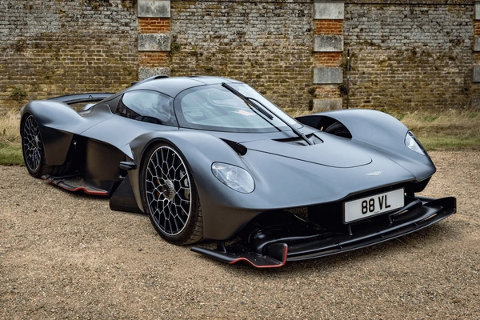

Aston Martin Valkyrie
3.000.000 €
El Valkyrie no ha sido diseñado para seguir las reglas, sino para reescribirlas. Nacido de la colaboración entre Aston Martin y el genio de la aerodinámica de Red Bull Racing, Adrian Newey, este hiperdeportivo es lo más cerca que un ser humano puede estar de conducir un prototipo de Le Mans en la vía pública.
- Motor 6.5L V12 Atmosférico
- Potencia 1155 CV
- 0-100 km/h 2.5 segundos
- Tracción Trasera (RWD)